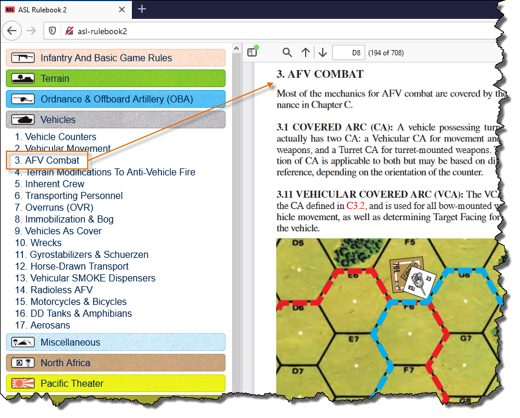
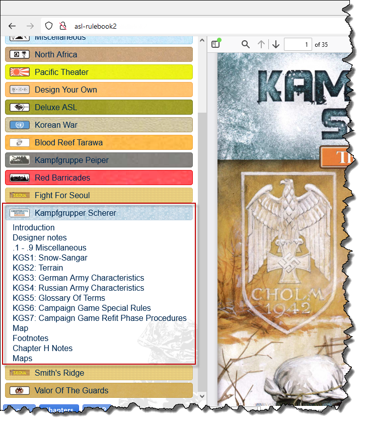

Out-of-the-box, this program gives you full-text search over the ASLRB index.
It will jump to the exact position in the eASLRB PDF for a rule when you click on a search result.
And if the rule has any associated footnotes, these will be shown in a popup.
You can also browse the ASLRB by chapter:

Once you've got the program up and running, you can then think about extending it. It's a lot of work, but the results are insanely cool!
To the right, I searched for "cellar", and the program has found results from Red Barricades. The rules for this are referenced in the ASLRB index, but the content is not yet in the MMP eASLRB.
However, I added a PDF scan of the rules, plus information about where each rule is within that PDF (a "targets file"), and so when I click on the O3.3 search result, it seamlessly opens the Red Barricades PDF and jumps to that rule.
You can also include third-party modules that are not referenced in the ASLRB index, in this case, LFT's Kampfgruppe Scherer. I added an index for it, which is then also searched. As with Red Barricades, I also added a PDF scan of the rules, and a targets file that specifies the location of each rule, and clicking on the KGS CG9 search result takes me directly to that rule in the KGS PDF.
I also added information about chapters in the PDF's, so that I can browse through them in the usual way:

Here, I've searched for "encircled", and the program has automatically shown Q+A and errata for rule A7.7.
Going back to the search results, you can see these Q+A entries included in there.
Note the checkboxes underneath the search box, that let you filter the results by type.
Here, I've added a note about what Majority Squad Type means, and a link back to the Game Squad post that talks about it.
ASOP entries are also included in search results: